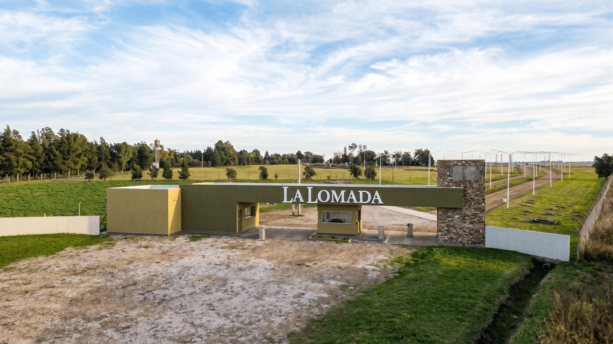

Marco Jurídico Claro
Brinda un marco jurídico claro y organizado.
Se trata de un Barrio Privado ubicado en Puiggari, Libertador San Martín, Provincia de Entre Ríos, Argentina, conformado por 84 lotes de 1000m², desarrollado bajo la figura jurídica de un fideicomiso.

Se trata de un Barrio Privado ubicado en Puiggari, Libertador San Martín, Provincia de Entre Ríos, Argentina, conformado por 84 lotes de 1000m², desarrollado bajo la figura jurídica de un fideicomiso, una herramienta ampliamente utilizada para la concreción de emprendimientos inmobiliarios por las garantías y la organización que ofrece.
Imágenes del loteo, accesos e infraestructura del desarrollo.
El fideicomiso constituye una herramienta sólida para el desarrollo de emprendimientos inmobiliarios, brindando la máxima seguridad jurídica y previsibilidad a todas las partes involucradas.
Brinda un marco jurídico claro y organizado.
Define de manera precisa los derechos y obligaciones de las partes.
Aporta transparencia al desarrollo del proyecto.
Este desarrollo cuenta con el acompañamiento y asesoramiento jurídico de:
Como escribanos intervinientes en el proyecto, nuestro compromiso es brindar un asesoramiento claro, transparente y personalizado, respondiendo las consultas de quienes deseen conocer el funcionamiento del fideicomiso y la documentación que sustenta el desarrollo.
Lo invitamos a contactarse con nosotros para recibir información y asesoramiento profesional.
Esc. Silvana Bollati y Vanesa Viccini
Esc. José Luis Brumatti
Ponemos a disposición nuestra experiencia notarial para brindar el acompañamiento jurídico necesario a quienes deseen interiorizarse sobre este desarrollo.
Solicitá una entrevista o asesoramiento personalizado. Con gusto responderemos tus consultas y te brindaremos toda la información necesaria sobre el proyecto y su estructura jurídica.
Solicitar asesoramiento →